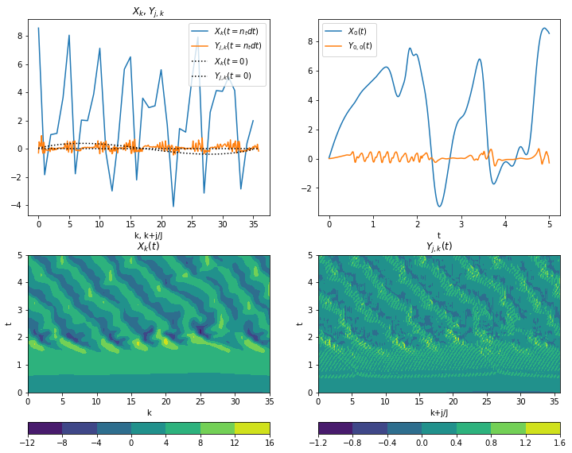

Contents
import inspect
import matplotlib.pyplot as plt
import numpy as np
from L96_model import L96_2t_xdot_ydot
print(inspect.getsource(L96_2t_xdot_ydot))
@jit
def L96_2t_xdot_ydot(X, Y, F, h, b, c):
"""
Calculate the time rate of change for the X and Y variables for the Lorenz '96, two time-scale
model, equations 2 and 3:
d/dt X[k] = -X[k-1] ( X[k-2] - X[k+1] ) - X[k] + F - h.c/b sum_j Y[j,k]
d/dt Y[j] = -b c Y[j+1] ( Y[j+2] - Y[j-1] ) - c Y[j] + h.c/b X[k]
Args:
X : Values of X variables at the current time step
Y : Values of Y variables at the current time step
F : Forcing term
h : coupling coefficient
b : ratio of amplitudes
c : time-scale ratio
Returns:
dXdt, dYdt, C : Arrays of X and Y time tendencies, and the coupling term -hc/b*sum(Y,j)
"""
JK, K = len(Y), len(X)
J = JK // K
assert JK == J * K, "X and Y have incompatible shapes"
Xdot = np.zeros(K)
hcb = (h * c) / b
Ysummed = Y.reshape((K, J)).sum(axis=-1)
Xdot = np.roll(X, 1) * (np.roll(X, -1) - np.roll(X, 2)) - X + F - hcb * Ysummed
# for k in range(K):
# Xdot[k] = ( X[(k+1)%K] - X[k-2] ) * X[k-1] - X[k] + F - hcb * Ysummed[k]
# for j in range(JK):
# k = j//J
# Ydot[j] = -c * b * Y[(j+1)%JK] * ( Y[(j+2)%JK] - Y[j-1] ) - c * Y[j] + hcb * X[k]
Ydot = (
-c * b * np.roll(Y, -1) * (np.roll(Y, -2) - np.roll(Y, 1))
- c * Y
+ hcb * np.repeat(X, J)
)
return Xdot, Ydot, -hcb * Ysummed
from L96_model import integrate_L96_2t
print(inspect.getsource(integrate_L96_2t))
def integrate_L96_2t(X0, Y0, si, nt, F, h, b, c, t0=0, dt=0.001):
"""
Integrates forward-in-time the two time-scale Lorenz 1996 model, using the RK4 integration method.
Returns the full history with nt+1 values starting with initial conditions, X[:,0]=X0 and Y[:,0]=Y0,
and ending with the final state, X[:,nt+1] and Y[:,nt+1] at time t0+nt*si.
Note the model is intergrated
Args:
X0 : Values of X variables at the current time
Y0 : Values of Y variables at the current time
si : Sampling time interval
nt : Number of sample segments (results in nt+1 samples incl. initial state)
F : Forcing term
h : coupling coefficient
b : ratio of amplitudes
c : time-scale ratio
t0 : Initial time (defaults to 0)
dt : The actual time step. If dt<si, then si is used. Otherwise si/dt must be a whole number. Default 0.001.
Returns:
X[:,:], Y[:,:], time[:] : the full history X[n,k] and Y[n,k] at times t[n]
Example usage:
X,Y,t = integrate_L96_2t(5+5*np.random.rand(8), np.random.rand(8*4), 0.01, 500, 18, 1, 10, 10)
plt.plot( t, X);
"""
xhist, yhist, time, _ = integrate_L96_2t_with_coupling(
X0, Y0, si, nt, F, h, b, c, t0=t0, dt=dt
)
return xhist, yhist, time
J = 10 # Number of local-scale Y variables per single global-scale X variable
K = 36 # Number of globa-scale variables X
nt = 1000 # Number of time steps
si = 0.005 # Sampling time interval
dt = 0.005 # Time step
F = 10.0 # Focring
h = 1.0 # Coupling coefficient
b = 10.0 # ratio of amplitudes
c = 10.0 # time-scale ratio
def s(k, K):
"""A non-dimension coordinate from -1..+1 corresponding to k=0..K"""
return 2 * (0.5 + k) / K - 1
k = np.arange(K) # For coordinate in plots
j = np.arange(J * K) # For coordinate in plots
# Initial conditions
Xinit = s(k, K) * (s(k, K) - 1) * (s(k, K) + 1)
Yinit = 0 * s(j, J * K) * (s(j, J * K) - 1) * (s(j, J * K) + 1)
# "Run" model
X, Y, t = integrate_L96_2t(Xinit, Yinit, si, nt, F, h, b, c, dt=dt)
plt.figure(figsize=(12, 10))
plt.subplot(221)
# Snapshot of X[k]
plt.plot(k, X[-1], label="$X_k(t=n_t dt)$")
plt.plot(j / J, Y[-1], label="$Y_{j,k}(t=n_t dt)$")
plt.plot(k, Xinit, "k:", label="$X_k(t=0)$")
plt.plot(j / J, Yinit, "k:", label="$Y_{j,k}(t=0)$")
plt.legend()
plt.xlabel("k, k+j/J")
plt.title("$X_k, Y_{j,k}$")
plt.subplot(222)
# Sample time-series X[0](t), Y[0](t)
plt.plot(t, X[:, 0], label="$X_0(t)$")
plt.plot(t, Y[:, 0], label="$Y_{0,0}(t)$")
plt.legend()
plt.xlabel("t")
plt.subplot(223)
# Full model history of X
plt.contourf(k, t, X)
plt.colorbar(orientation="horizontal")
plt.xlabel("k")
plt.ylabel("t")
plt.title("$X_k(t)$")
plt.subplot(224)
# Full model history of Y
plt.contourf(j / J, t, Y)
plt.colorbar(orientation="horizontal")
plt.xlabel("k+j/J")
plt.ylabel("t")
plt.title("$Y_{j,k}(t)$");

from L96_model import L96
help(L96)
Help on class L96 in module L96_model:
class L96(builtins.object)
| L96(K, J, F=18, h=1, b=10, c=10, t=0, dt=0.001)
|
| Class for two time-scale Lorenz 1996 model
|
| Methods defined here:
|
| __init__(self, K, J, F=18, h=1, b=10, c=10, t=0, dt=0.001)
| Construct a two time-scale model with parameters:
| K : Number of X values
| J : Number of Y values per X value
| F : Forcing term (default 18.)
| h : coupling coefficient (default 1.)
| b : ratio of amplitudes (default 10.)
| c : time-scale ratio (default 10.)
| t : Initial time (default 0.)
| dt : Time step (default 0.001)
|
| __repr__(self)
| Return repr(self).
|
| __str__(self)
| Return str(self).
|
| copy(self)
|
| print(self)
|
| randomize_IC(self)
| Randomize the initial conditions (or current state)
|
| run(self, si, T, store=False, return_coupling=False)
| Run model for a total time of T, sampling at intervals of si.
| If store=Ture, then stores the final state as the initial conditions for the next segment.
| If return_coupling=True, returns C in addition to X,Y,t.
| Returns sampled history: X[:,:],Y[:,:],t[:],C[:,:].
|
| set_param(self, dt=None, F=None, h=None, b=None, c=None, t=None)
| Set a model parameter, e.g. .set_param(si=0.01, dt=0.002)
|
| set_state(self, X, Y, t=None)
| Set initial conditions (or current state), e.g. .set_state(X,Y)
|
| ----------------------------------------------------------------------
| Data descriptors defined here:
|
| __dict__
| dictionary for instance variables (if defined)
|
| __weakref__
| list of weak references to the object (if defined)
|
| ----------------------------------------------------------------------
| Data and other attributes defined here:
|
| F = 'Forcing'
|
| X = 'Current X state or initial conditions'
|
| Y = 'Current Y state or initial conditions'
|
| b = 'Ratio of timescales'
|
| c = 'Ratio of amplitudes'
|
| dt = 'Time step'
|
| h = 'Coupling coefficient'
# Create an instance of the L96 model, default parameters except those given
M = L96(36, 10, F=10, dt=0.005)
M
L96: K=36 J=10 F=10 h=1 b=10 c=10 dt=0.005
# Set the initial conditions (here X is the same cubic as above, Y=0)
M.set_state(s(M.k, M.K) * (s(M.k, M.K) - 1) * (s(M.k, M.K) + 1), 0 * M.j)
print(M)
L96: K=36 J=10 F=10 h=1 b=10 c=10 dt=0.005
X=[ 0.05326217 0.14641204 0.22258659 0.28281464 0.328125 0.35954647
0.37810785 0.38483796 0.3807656 0.36691958 0.3443287 0.31402178
0.27702761 0.234375 0.18709276 0.13620971 0.08275463 0.02775634
-0.02775634 -0.08275463 -0.13620971 -0.18709276 -0.234375 -0.27702761
-0.31402178 -0.3443287 -0.36691958 -0.3807656 -0.38483796 -0.37810785
-0.35954647 -0.328125 -0.28281464 -0.22258659 -0.14641204 -0.05326217]
Y=[0 0 0 0 0 0 0 0 0 0 0 0 0 0 0 0 0 0 0 0 0 0 0 0 0 0 0 0 0 0 0 0 0 0 0 0 0
0 0 0 0 0 0 0 0 0 0 0 0 0 0 0 0 0 0 0 0 0 0 0 0 0 0 0 0 0 0 0 0 0 0 0 0 0
0 0 0 0 0 0 0 0 0 0 0 0 0 0 0 0 0 0 0 0 0 0 0 0 0 0 0 0 0 0 0 0 0 0 0 0 0
0 0 0 0 0 0 0 0 0 0 0 0 0 0 0 0 0 0 0 0 0 0 0 0 0 0 0 0 0 0 0 0 0 0 0 0 0
0 0 0 0 0 0 0 0 0 0 0 0 0 0 0 0 0 0 0 0 0 0 0 0 0 0 0 0 0 0 0 0 0 0 0 0 0
0 0 0 0 0 0 0 0 0 0 0 0 0 0 0 0 0 0 0 0 0 0 0 0 0 0 0 0 0 0 0 0 0 0 0 0 0
0 0 0 0 0 0 0 0 0 0 0 0 0 0 0 0 0 0 0 0 0 0 0 0 0 0 0 0 0 0 0 0 0 0 0 0 0
0 0 0 0 0 0 0 0 0 0 0 0 0 0 0 0 0 0 0 0 0 0 0 0 0 0 0 0 0 0 0 0 0 0 0 0 0
0 0 0 0 0 0 0 0 0 0 0 0 0 0 0 0 0 0 0 0 0 0 0 0 0 0 0 0 0 0 0 0 0 0 0 0 0
0 0 0 0 0 0 0 0 0 0 0 0 0 0 0 0 0 0 0 0 0 0 0 0 0 0 0]
t=0
# Run the model for 1000 sample intervals, or for time 1000*0.005 = 5
X2, Y2, t = M.run(0.005, 5)
print("Mean absolute difference =", np.abs(X2 - X).mean() + np.abs(Y2 - Y).mean())
Mean absolute difference = 0.0
# The one line version of the above
X3, Y3, t = (
L96(36, 10, F=10, dt=0.005)
.set_state(s(M.k, M.K) * (s(M.k, M.K) - 1) * (s(M.k, M.K) + 1), 0 * M.j)
.run(0.005, 5)
)
print("Mean absolute difference =", np.abs(X3 - X).mean() + np.abs(Y3 - Y).mean())
Mean absolute difference = 0.0